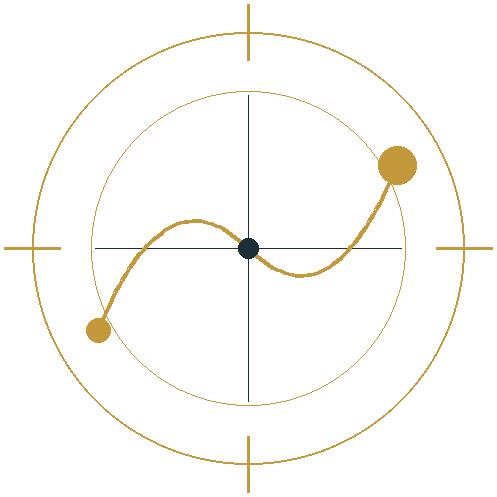

Developmental guidance for individuals and organisations, grounded in Islamic scholarship and occupational science.
OurPath is a private practice offering structured, non-clinical guidance. We work with people who are ready to engage deliberately with their own growth, and with organisations building the capacity to support others.
Request a ConsultationBased in Whitechapel, London. In person or online. We reply within two working days.
How we work
Development happens through deliberate practice and skilled companionship. Our work draws on classical Islamic pedagogy and contemporary occupational science, held together rather than blended.
The frame is ṣuḥba, the disciplined companionship through which knowledge has long been transmitted. Around that sits a defined structure: a six-phase developmental pathway, a reflective instrument for tracking movement, and a set of stances a mentor works from.
This is not therapy. It is structured guidance for people seeking clarity and direction, with clear boundaries about what falls outside our scope. You can read more about the methodology and where its limits sit.
Three routes
Individual work, a structured monthly programme, and partnerships with organisations.
- Individual GuidanceOne to one, in person or online
- The OurPath ProgrammeStructured monthly engagement, one to one and group
- Institutional PartnershipsTraining, pastoral system design, supervision, licensing
What participants say
Even thinking about the questions themselves throughout the week grounds my thinking. I can have two questions on my mind and see the impact and consequences that follow from that.
I've spoken about my decision paralysis before. Noticing that has come from the reflective work, and now I'm finding myself being more deliberate with the steps I take and not worrying too much about the what-ifs.

Ready to find out whether this is the right fit?
Tell us what you are looking for. We reply within two working days.
Request a Consultation